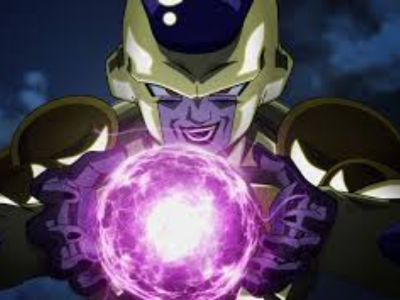

Freeza
Freeza é um dos antagonistas mais icônicos da franquia Dragon Ball, criada por Akira Toriyama. Ele é um tirano galáctico e o imperador do Universo 7, conhecido por sua crueldade implacável e seu desejo insaciável de poder. Desde sua primeira aparição na série, Freeza é retratado como um vilão extremamente poderoso e calculista. Ele comanda um vasto exército de soldados e é temido em toda a galáxia por sua capacidade de destruição e seu domínio brutal sobre seus súditos.